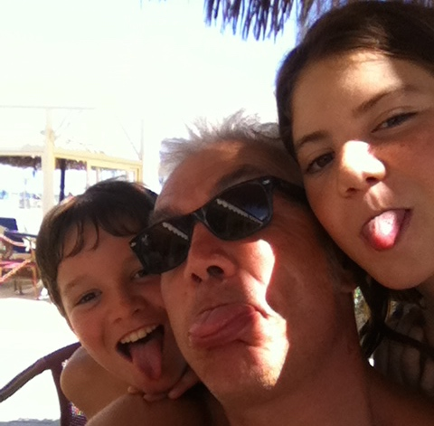

This page is deliberately kept vintage in honour of the glorious days of handwritten HTML1.0
|  |
ContactsOffice Address: Via Amendola, 2 - 42122 Reggio Emilia Phone: +39-0522-522215 Fax: +39-0522-522209 Email: franco dot zambonelli at unimore dot it Meet Students: Tuesday Morning (Reggio Emilia); Monday Morning (Modena) |